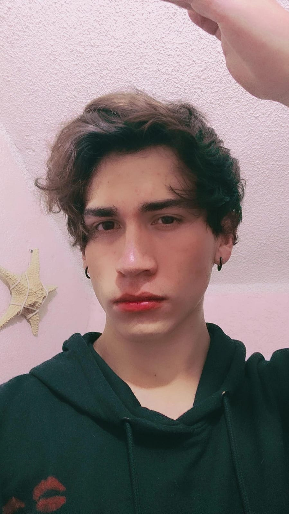
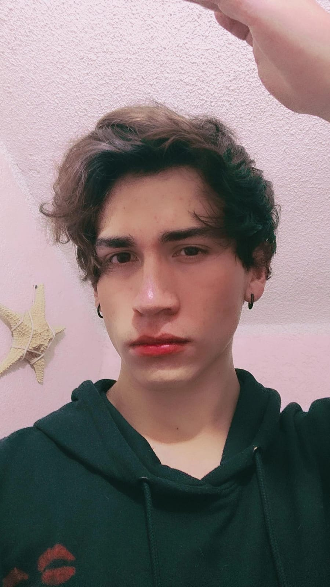

Mis gustos
- Musica: De todo
- Animales: Gatos, Perros, Lobos y Tarantulas
- Comida: Albondigas
Mi nombre es Brandon Willebaldo Hernández Ojeda,
naci el 10 de agosto del 2005, tengo 20 años
vivo con mi madre y mi hermano.
Durante mi infancia, recuerdo que siempre me la pasaba
haciendo dibujos y me sentaba en el tapete para estar
mas comodo.
Durante la secundaria y la preparatoria tuve bastantes
recuerdos bueno, tuve proyectos muy importantes y participe
en competencias de dibujo, robotica y mecanica.
En la actualidad continuo con mis estudios porque quiero
llegar a lograr mi objetivo de vida que es ser conocido
crear proyectos grandes o tener mi propia empresa de desarrollo,
continuo estudiando la universidad en la licenciatura de
Enternos Virtuales y Negiocios Digitales.
Concluyo mi autobiografía con varios aprendizajes importantes de
mi vida, obstaculos superado y momentos que me marcaron en la vida
momentos muy importantes y que me han ido formado en la persona que
soy hoy en día.
 
